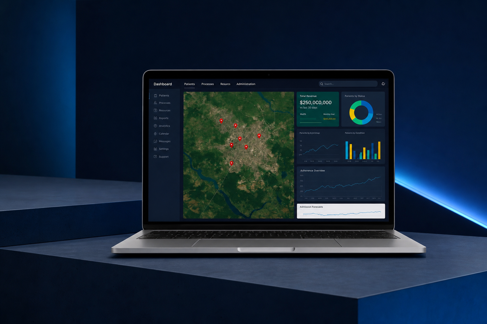
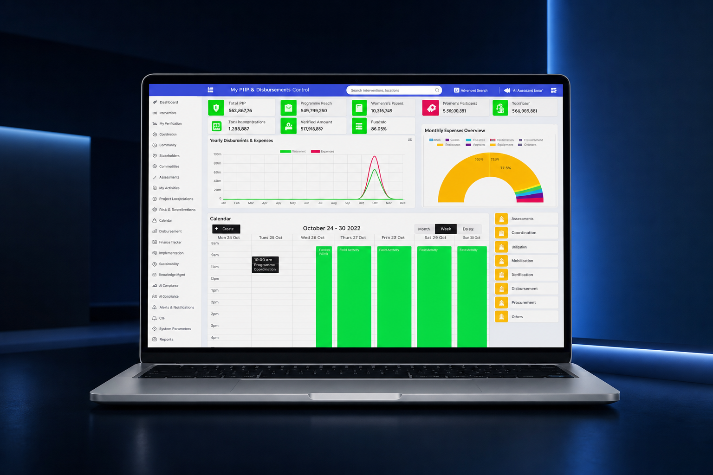

Abidjan · London · Gabon · DRC
Transforming Africa through digital innovation
ABG Digital Solutions builds high-value digital solutions for healthcare, the public sector and fintech — designed for African realities, backed by 10+ years of on-the-ground experience.
Who we are
We believe in a transformation built by Africans, for Africans.
Our identity
A pan-African company, born between Abidjan and London
ABG Digital Solutions is a pan-African company specialising in the creation of high-value digital solutions. Drawing on more than 10 years of experience in digital strategy, innovation and technology project management, ABG designs solutions suited to African realities — high-performing and results-driven.
We are African, aware of local challenges, and determined to bring concrete technological answers to the needs of businesses, public institutions and international organisations.
Meet the teamAreas of expertise
Our areas of expertise
Four complementary areas of expertise, designed to support the digital transformation of African organisations end to end.
Digital health
Patient journey management, digitisation of payments and billing, hospital management and traceability.
Custom platforms
Multi-stakeholder monitoring and reporting, project and infrastructure oversight, data collection and traceability.
FinTech & transactions
Mobile payments, the Yeli health wallet, mobile money aggregation, banking integration and flow security.
Digital transformation & AI
Paperless workflows, electronic archiving, training and AI integration to sustainably digitise your organisation.
Our flagship solutions
Products already deployed, not concepts
Four concrete solutions, already in use on the ground, designed for African healthcare, public sector and fintech needs.
Yeli — instant healthcare payments
YELI is an instant payment application that lets users settle a bill remotely simply by entering an invoice number.
- Medical sector
- Pharmaceutical sector
- Funeral services sector
Patient Journey
ABG's Patient Journey solution modernises care delivery by ensuring continuous follow-up, better coordination between services, and full transparency of hospital operations.
- Unique identifier tracking every step of the journey
- Complete, accessible medical history
- Fully digitised billing and payments
- Interoperability with national health insurance and existing systems

Monitoring & Evaluation Platform for projects & programmes
This solution centralises all the data of projects financed by technical and financial partners, enabling unified, reliable, real-time oversight of the national portfolio.
- Single repository — physical, financial and administrative data
- Digitised workflows and consolidated indicators
- Full interoperability with public systems (budget, procurement, accounting)
- Citizen transparency portal and dedicated donor space
- Mapping module with satellite imagery

Paperless workflows & electronic archiving
We turn your paper flows and manual processes into fluid, traceable, remotely accessible digital workflows — from document collection to electronic validation.
- Digitisation and indexing of existing document collections
- Secure electronic forms and signatures
- Automated approval and validation workflows
- Digital vault and local regulatory compliance
Our method
Supporting the digital shift of organisations
ABG supports businesses, administrations and institutions in redesigning their business processes through digital technology — from diagnosis to lasting adoption.
Diagnosis
Process mapping, identifying pain points and efficiency gains.
Roadmap
Prioritising workstreams and defining a realistic digitisation trajectory.
Deployment
Rollout of digital tools, paperless workflows and systems integration.
Support
Team training, change management and lasting adoption.
Artificial intelligence
Training and integrating AI to support decision-making
Beyond consulting, ABG builds and integrates AI components directly into your existing systems to automate, predict and inform decisions — with training paths tailored to every role.
- Executive awareness — AI stakes, opportunities and risks
- Hands-on team workshops — generative AI and automation tools
- Technical tracks — integration, data and model deployment
Automation
Automating repetitive tasks and document workflows through AI.
Predictive analytics
Predictive models to anticipate demand, risks and operational needs.
Smart dashboards
Consolidated indicators and automatically generated recommendations for decision-making.
Responsible AI
Secure, sovereign and compliant deployments, with human oversight of critical decisions.
Why ABG
What sets us apart
Field & institutional expertise
Trusted to work with university hospitals, ministries, banks, donors and local ecosystems.
Solutions built for African realities
Simple, resilient, scalable tools designed for local use: variable connectivity, digital inclusion, gradual adoption.
AI integration
Automation, prediction, smart dashboards, decision optimisation.
Pan-African reach
Solutions deployable rapidly across UEMOA, CEMAC and North Africa.
Results culture
Committed to quality, performance, client satisfaction and sustainability.
Pan-African vision
Making technology accessible, useful and sustainable for an inclusive digital continent.
Our values
The pillars of our action
Innovation
Designing forward-thinking solutions to meet Africa's technological challenges.
Excellence
Delivering high-quality, secure and lasting services.
Commitment
Working in synergy with public and private sectors for lasting impact.
Inclusion
Ensuring our solutions are accessible to all, for equitable growth.
Responsibility
Supporting initiatives for education, health and digital inclusion.
The team
The people behind ABG
Abbassi Myriam
FounderEntrepreneur specialising in communication and digital transformation, with over 15 years of experience between Abidjan, Casablanca and Paris. She supports businesses and institutions in their innovation and modernisation projects.
Bamba Masha
Strategic consulting & digital transformationSupports public actors, institutions and businesses in designing and implementing high-impact projects across West Africa, driving innovation and organisational structuring.
Gnade Arcin
Digital transformation & IT programme managementExpert in digital transformation and IT programme management, with strong expertise in designing, deploying and steering large-scale technology solutions.
A digital, inclusive and sustainable continent
We aspire to become the pan-African leader in digital transformation, developing innovative technologies — including Artificial Intelligence — that drive digital integration.
Discuss your project